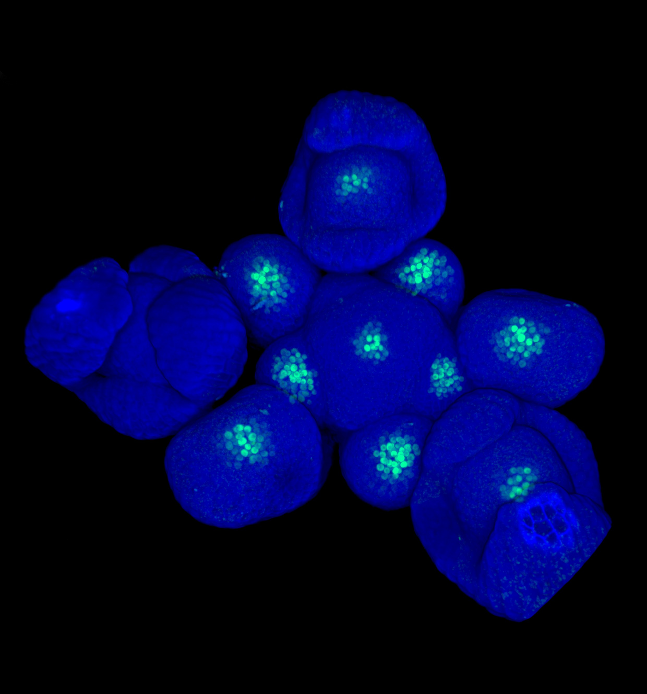

We work out how a small, self-organising niche of cells at the shoot apex specifies, maintains, and tunes the stem cell population that builds every leaf, stem and flower a plant will ever make — and how it does so across days, seasons, and generations.

CLV3 stem cell reporter in shoot apical meristems of Arabidopsis.
Cell-type-resolved targets, cofactors and chromatin states of WUS — and how one short-range signal sustains a population of cells across decades of growth.
Conditional CRISPR perturbations, single-cell transcriptomics and imaging in the Arabidopsis root tip and the Drosophila gut. Part of the ERC Synergy project DECODE.
Where cytokinin, auxin and jasmonate intersect the WUS circuit — including the trade-off between growth and defence in the shoot apex.
How temperature, light and nutrients meet the niche through TOR-kinase signalling, and how the same cues set the limits of regeneration across Marchantia, Arabidopsis and Brachypodium. Part of the GreenRobust Cluster of Excellence.